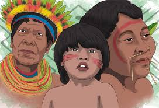

Introducción
Este proyecto analiza la situación de los derechos de los pueblos indígenas en Colombia. Se realiza con el objetivo de visibilizar sus problemáticas y proponer soluciones desde un enfoque de derechos humanos.
Planteamiento del Problema
Los pueblos indígenas enfrentan discriminación estructural, desplazamiento, y falta de acceso a servicios básicos. ¿Cómo influyen las políticas públicas en la garantía efectiva de sus derechos?
Justificación
Este proyecto visibiliza las problemáticas y busca influir en políticas públicas inclusivas, promoviendo el respeto y fortalecimiento de sus derechos.
Objetivos
- General: Analizar cómo influyen las políticas públicas y normatividad vigente en la garantía de derechos de los pueblos indígenas.
- Específicos:
- Identificar derechos vulnerados.
- Evaluar normatividad nacional e internacional.
- Proponer estrategias de fortalecimiento.
Hipótesis
La falta de un marco legal eficaz y el desconocimiento histórico por parte del Estado ha generado desigualdades persistentes. Con políticas públicas inclusivas y educación intercultural, es posible mejorar su calidad de vida y participación ciudadana.
Marco Teórico / Legal / Referencial
Incluye referencias a la Constitución Política de Colombia (1991), Convenio 169 de la OIT, Declaración ONU (2007), y leyes nacionales como Ley 4633/2011, Ley 21/1991 y Decretos sobre derechos indígenas.
Metodología
Se usó un enfoque mixto, con encuestas digitales a estudiantes y revisión documental. Se analizó la situación a través de entrevistas y herramientas estadísticas de Google Forms.
Resultados
La mayoría de los encuestados reconoce la falta de información sobre derechos indígenas. Las políticas públicas existen pero no se aplican correctamente. Se identificó desconocimiento general en estudiantes.
Conclusiones
Se concluye que la falta de implementación efectiva de leyes y políticas agrava la vulnerabilidad indígena. Se requieren acciones urgentes para asegurar una sociedad inclusiva y justa.
Recomendaciones
- Fomentar la educación intercultural en colegios.
- Garantizar participación de comunidades en decisiones públicas.
- Reforzar mecanismos de protección y acceso a la justicia.
Bibliografía
- Defensoría del Pueblo (2020). Informe sobre desplazamientos forzados.
- Constitución Política de Colombia (1991).
- OIT. Convenio 169 sobre pueblos indígenas.
- Declaración ONU sobre los Derechos de los Pueblos Indígenas (2007).
- Ayuda en Acción (2018). Derechos de los pueblos indígenas.